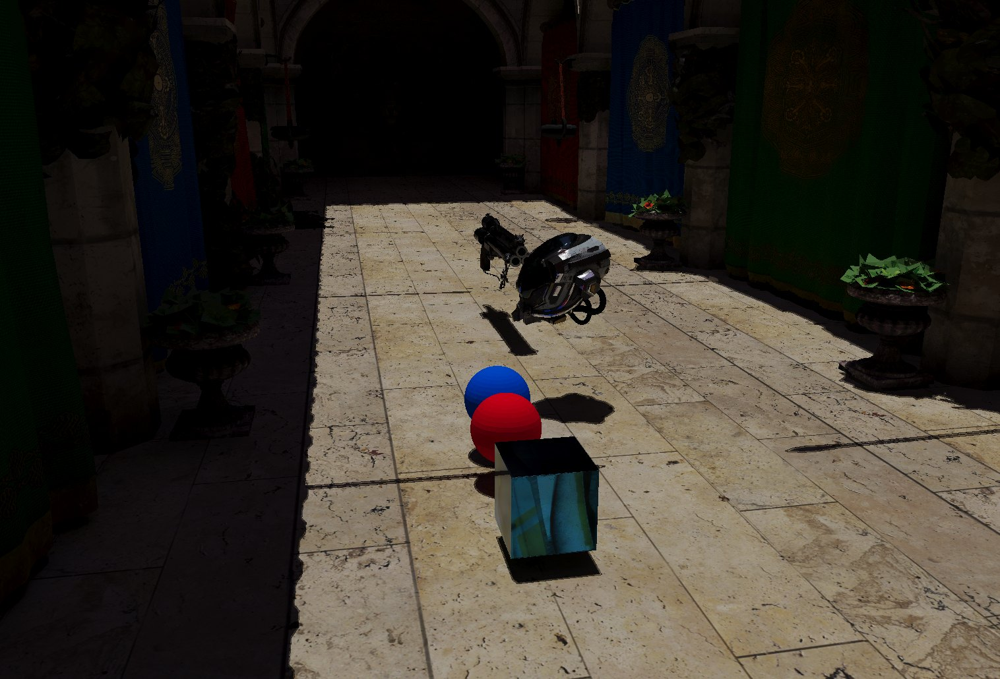
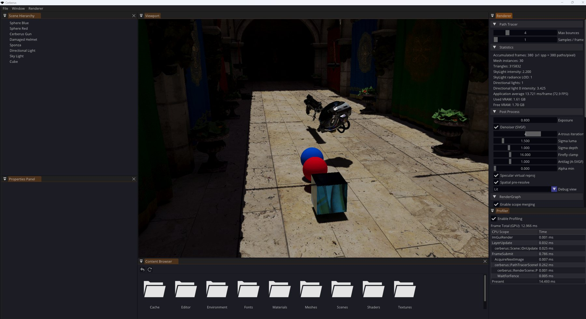
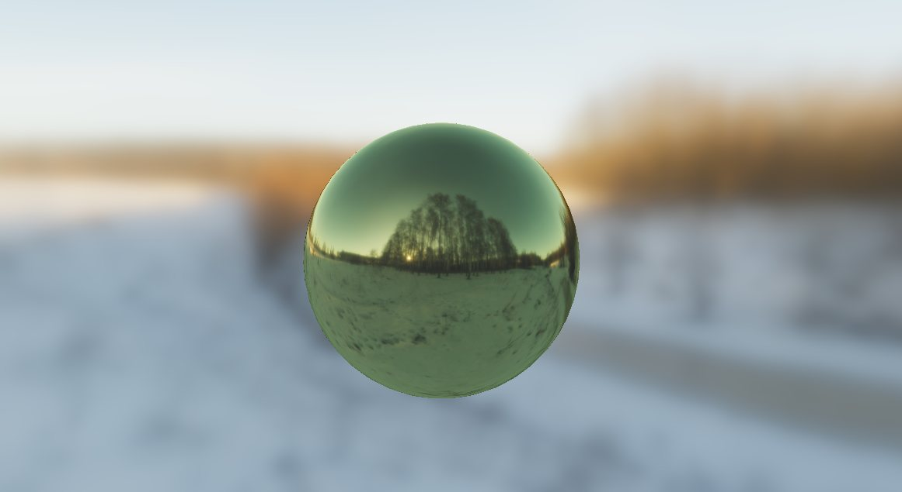
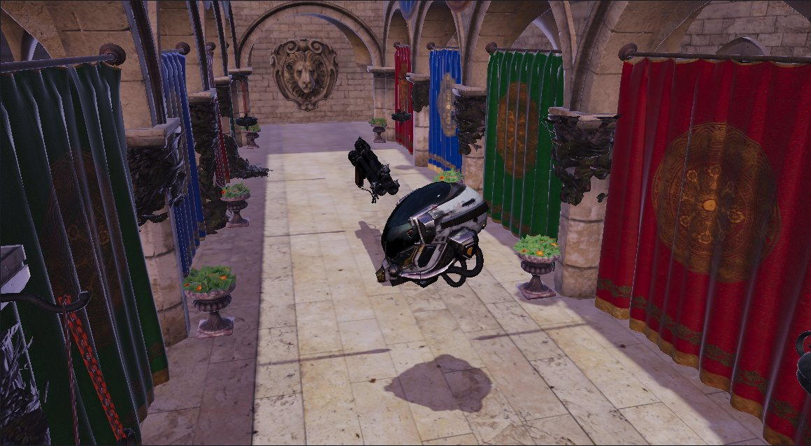
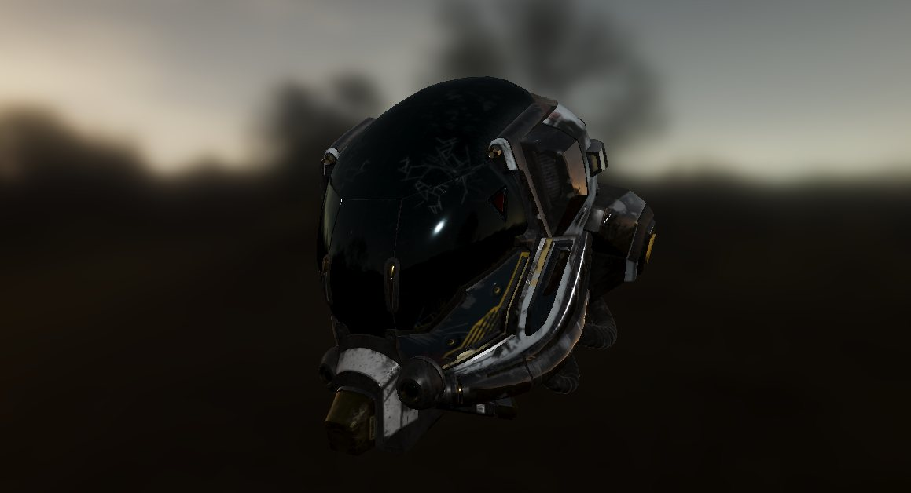

I make Unreal Engine 5 games run faster on PS5, Xbox Series X|S and PC. I profile the frame, find which part of a pass actually costs time, and fix it in the renderer or in the content. In my own time I build Cerberus, a Vulkan renderer with a hardware ray-traced path tracer.

Results from my work at Third Kind Games (Virtuos). The current project is unannounced and under NDA, so only the pass, the change and the measured result are shown.
Changed how shadow animation updates are handled for skinned foliage.
Profiled the pass and found voxels (~28%) and programmable raster (~20%) were its largest costs. Built tools to switch foliage Nanite settings to voxels and tuned programmable raster, density and rasteriser configuration.
Reduced the upload spikes that caused frame hitches.
Broke both passes down against the platform budget with A/B tests: masked materials, WPO, derivative-heavy shading and vertex-side material features. Turned the findings into a prioritised action plan for Art and Tech Art.
Diagnosed and fixed AMD-specific crashes when adding Ray Tracing Pipeline State Objects, with vendor-specific handling in the RHI.
Designed a graphics settings framework for DLSS, FSR 4 and frame generation, and per-platform Performance and Quality modes built on Device Profiles.
Added a distance-based ray-count falloff for Shadow Map Ray Tracing and custom cache invalidation for large, streamed worlds.
Percentages are approximate and measured on the project's own captures. Bars show the share of the pass's cost removed.
A Vulkan renderer written from scratch in C++20. It has two scene renderers you can switch at runtime: a forward PBR rasteriser and a hardware ray-traced path tracer with its own denoiser. Both run on a render graph over a thin RHI.

Raygen, closest-hit and miss shaders, BLAS/TLAS builds with compaction, a shader binding table and bindless textures. One sample per pixel, BSDF-sampled indirect light and next-event estimation for directional lights.
Demodulated diffuse and specular signals. Temporal reprojection with consistency checks and a ReLAX-style search fallback, virtual reprojection for reflections, a history-fix pass and variance-guided à-trous filtering.
Passes declare what they read and write. The graph sorts them, derives every barrier from real per-frame access history, merges compatible passes into one Dynamic Rendering scope, culls unused passes and times each pass on the GPU.
Typed command lists for graphics, compute, transfer and ray tracing, handle-based resource ownership and deferred deletion. A forward renderer with shadow cascades and GPU-baked IBL, and an ImGui editor.
// one frame, one submit Editor / Application └─ SceneRenderer Forward | PathTracer // only the active one is alive └─ RenderGraph declared access → order, barriers, scope merging └─ Command lists graphics · compute · ray tracing └─ Cerberus RHI → Vulkan



Unannounced UE5 project under NDA (since Jul 2026) and Mavrix (Feb 2025 – Jul 2026). GPU and CPU performance on PS5, Xbox Series X|S and PC; engine-level renderer changes.
Judas, Unreal Engine 4. Time-sliced, on-demand reflection-probe generation for procedurally generated content; mentored a junior developer.
Judas, Unreal Engine 4. Render-state streaming to cut primitives processed per frame; backported UE5 compute visibility to UE4.
Judas, Unreal Engine 4. Culling to reduce draw calls and lighting optimisation within performance budgets.
Master's in Computer Science, Instituto Superior Técnico, Lisbon (2019 – 2021) · Bachelor's in Computer Science, University of Lisbon (2016 – 2019)
Engines built for university graphics courses, with particles, bloom and cel shading.